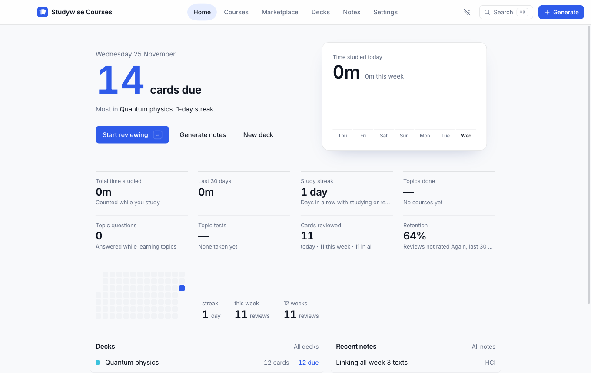
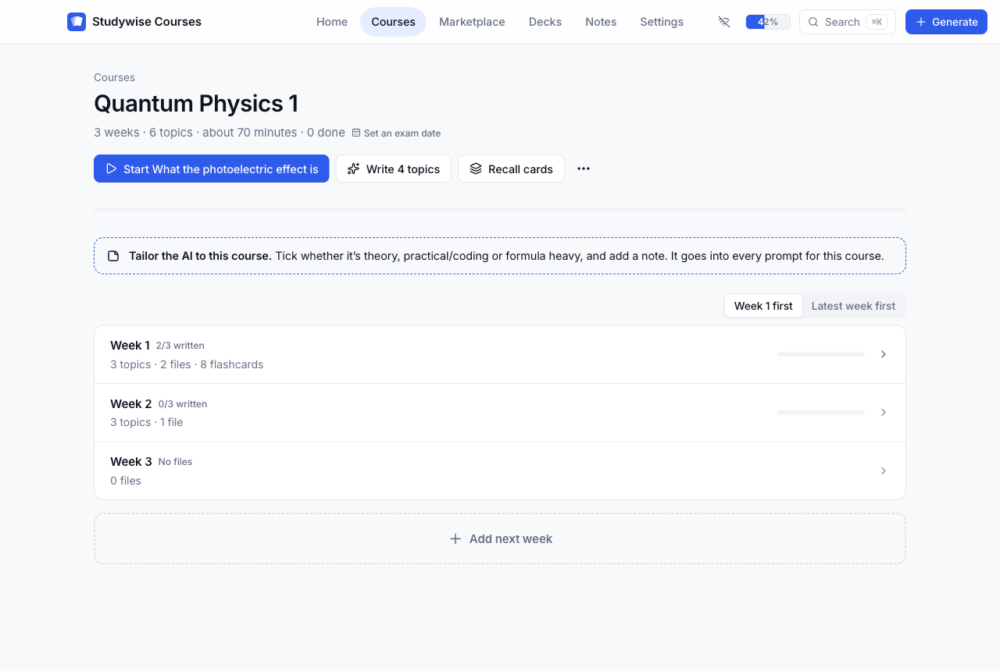
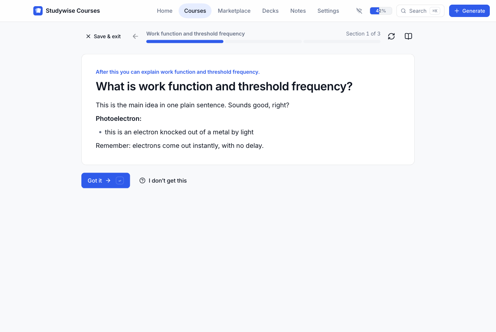
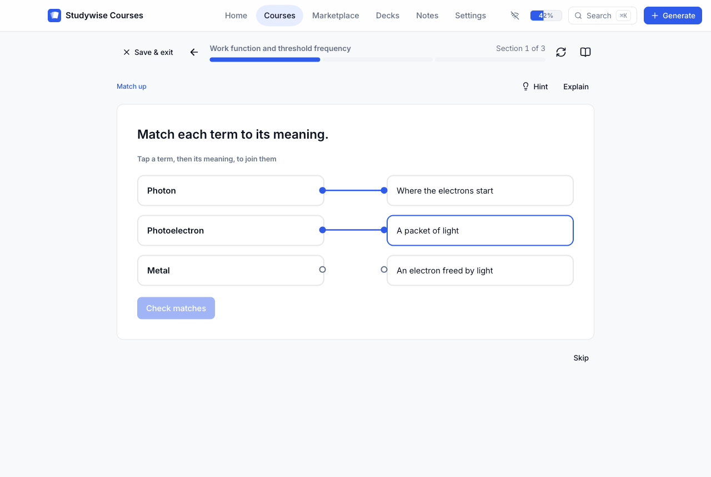
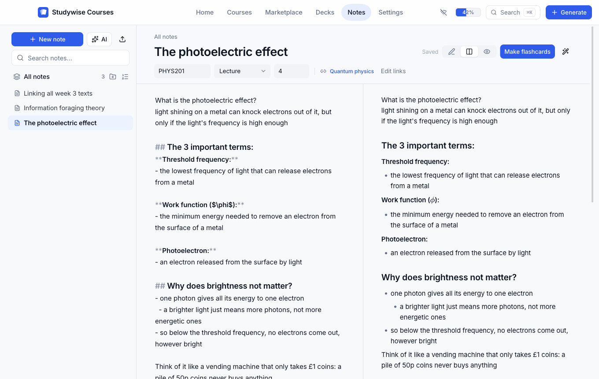
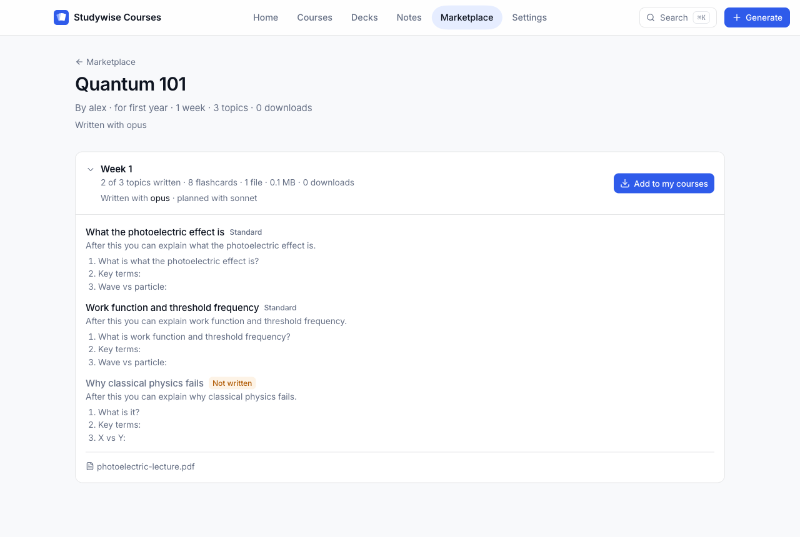

Turn your lectures into a course.
Give it your slides, transcripts and readings. Studywise splits each week into topics and teaches them in short lessons, with practice questions and flashcards.
Free. Also on Android. Needs a Claude account and Claude Code, or Ollama.

A course for every module
Add each week's slides, lecture transcripts and readings. Studywise plans the week into topics, and you can see at a glance what's written, what's done and what's next.

Learn a bit at a time
Each topic is taught in short sections: a screen of notes, with the slide's figure if it helps, then a few quick questions before the next bit. Take the topic's test when you're ready.

Questions that make you think
Multiple choice, true or false, fill the gap, put in order, sort into groups, match up, and explain in your own words, with your written answers marked and explained.

Flashcards, red, yellow, green
Go through cards in sets of 15 and mark each one red, yellow or green. Two greens and it's learnt; after that it comes back after 1 day, then 3, then 7, further apart each time you remember it.

Your own notes
Write notes in Markdown, sorted into folders, with maths, tables and diagrams. Turn any note into flashcards with one click.

Share weeks with your course
Publish the weeks you've made so others on the same module can add them for free, without generating anything. Before you plan a week, Studywise checks whether someone has already made it from the same slides.

Also
- An Android app that syncs with your computer over Wi‑Fi and works offline
- Make flashcards from a PDF, your notes or pasted text, or import Anki decks
- End-of-week tests, quick reviews and an Explain button on anything
- Offline mode: study everything you've made without AI
- Works from the keyboard: arrow keys, Enter, and shortcuts for everything (press ? in the app)
- Edit every AI prompt, and pick which model each task uses
- Everything is stored on your computer
Setup
-
Install Claude Code and log in:
Or use Ollama: in Settings → AI provider pick Ollama and paste an API key from ollama.com.npm install -g @anthropic-ai/claude-code claude - Download Studywise Courses and open it. It tells you when there's a new version.
The app isn't signed yet. On a Mac, right-click it and pick Open the first time. On Windows, click More info, then Run anyway.
Studywise uses your own Claude account through Claude Code, under Anthropic's terms. It isn't affiliated with Anthropic or StudySmarter.